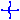
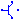
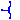
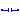

Collection of functions and records derived from the C++ Spice library
The package Internal contains functions and auxiliary models that are necessary for the Spice3 models. The package should not be used by the users of the Spice3-library.
Extends from Modelica.Icons.InternalPackage (Icon for an internal package (indicating that the package should not be directly utilized by user)).
| Name | Description |
|---|---|
|  MOS | Metal-Oxide Semiconductor Field-Effect Transistor |
| Record with technology parameters (.model) | |
| MOS2 | Metal-Oxide Semiconductor Field-Effect Transistor |
| Record with technology parameters (.model) | |
|  BJT2 | Bipolar junction transistor |
| Record with technology parameters (.model) | |
|  JFET | Junction Field-Effect Transistor |
| Record with technology parameters (.model) | |
| DIODE | Diode model |
| Record with technology parameters (.model) | |
| R_SEMI | Semiconductor resistor |
| Record with technology parameters (.model) | |
|  C_SEMI | Semiconductor capacitor |
| Record with technology parameters (.model) | |
| General constants of SPICE simulator | |
| Equations for semiconductor calculation | |
| Basic records and functions | |
| Device Temperature | |
| Functions and records for MOSFETs | |
| Records and functions for MOSFETs level 1,2,3,6 | |
| Records and functions for MOSFETs level 1 | |
| Records and functions for MOSFETs level 2 | |
| Records and functions for diode model | |
| Records and functions for semiconductor resistor model | |
| Records and functions for bjt model | |
| Records and functions for Jfet | |
Metal-Oxide Semiconductor Field-Effect Transistor
MOSFET model, both N and P channel, LEVEL 1: Shichman-Hodges
| Name | Description |
|---|---|
| mtype | MOSFET type: 0 - N channel, 1 - P channel |
| L | Length [m] |
| W | Width [m] |
| AD | Area of the drain diffusion [m2] |
| AS | Area of the source diffusion [m2] |
| PD | Perimeter of the drain junction [m] |
| PS | Perimeter of the source junction [m] |
| NRD | Number of squares of the drain diffusions |
| NRS | Number of squares of the source diffusions |
| OFF | Optional initial condition: 0 - IC not used, 1 - IC used, not implemented yet |
| IC | Initial condition values, not implemented yet [V] |
| TEMP | Operating temperature of the device [degC] |
| modelcard | MOSFET modelcard |
| C | General constants of SPICE simulator |
| Name | Description |
|---|---|
| G | Gate node |
| D | Drain node |
| S | Source node |
| B | Bulk node |
 Modelica.Electrical.Spice3.Internal.ModelcardMOS
Modelica.Electrical.Spice3.Internal.ModelcardMOSRecord with technology parameters (.model)
Modelcard parameters for MOSFET model, both N and P channel, LEVEL 1: Shichman-Hodges
Extends from Modelica.Icons.Record (Icon for records).
| Name | Description |
|---|---|
| VTO | Zero-bias threshold voltage, default 0 [V] |
| KP | Transconductance parameter, default 2e-5 [A/V2] |
| GAMMA | Bulk threshold parameter, default 0 |
| PHI | Surface potential, default 0.6 [V] |
| LAMBDA | Channel-length modulation, default 0 [1/V] |
| RD | Drain ohmic resistance, default 0 [Ohm] |
| RS | Source ohmic resistance, default 0 [Ohm] |
| CBD | Zero-bias B-D junction capacitance, default 0 [F] |
| CBS | Zero-bias B-S junction capacitance, default 0 [F] |
| IS | Bulk junction saturation current [A] |
| PB | Bulk junction potential [V] |
| CGSO | Gate-source overlap capacitance per meter channel width [F/m] |
| CGDO | Gate-drain overlap capacitance per meter channel width [F/m] |
| CGBO | Gate-bulk overlap capacitance per meter channel width [F/m] |
| RSH | Drain and source diffusion sheet resistance [Ohm] |
| CJ | Zero-bias bulk junction bottom cap. per sq-meter of junction area [F/m2] |
| MJ | Bulk junction bottom grading coefficient |
| CJSW | Zero-bias junction sidewall cap. per meter of junction perimeter [F/m] |
| MJSW | Bulk junction sidewall grading coefficient |
| JS | Bulk junction saturation current per sq-meter of junction area [A/m2] |
| TOX | Oxide thickness, default 1e-7 [m] |
| NSUB | Substrate doping, default 0 |
| NSS | Surface state density [1/cm2] |
| TPG | Type of gate material: +1 opp. to substrate, -1 same as substrate, 0 Al gate |
| LD | Lateral diffusion [m] |
| UO | Surface mobility [cm2/(V.s)] |
| KF | Flicker noise coefficient |
| AF | Flicker noise exponent |
| FC | Coefficient for forward-bias depletion capacitance formula |
| TNOM | Parameter measurement temperature, default 27 [degC] |
Metal-Oxide Semiconductor Field-Effect Transistor
MOSFET model, both N and P channel, LEVEL 2
| Name | Description |
|---|---|
| mtype | MOSFET type: 0 - N channel, 1 - P channel |
| L | Length [m] |
| W | Width [m] |
| AD | Area of the drain diffusion [m2] |
| AS | Area of the source diffusion [m2] |
| PD | Perimeter of the drain junction [m] |
| PS | Perimeter of the source junction [m] |
| NRD | Number of squares of the drain diffusions |
| NRS | Number of squares of the source diffusions |
| OFF | Optional initial condition: 0 - IC not used, 1 - IC used, not implemented yet |
| IC_VDS | Initial condition value (VDS, not implemented yet) [V] |
| IC_VGS | Initial condition value (VGS, not implemented yet) [V] |
| IC_VBS | Initial condition value (VBS, not implemented yet) [V] |
| UIC | Use initial conditions: true, if initial condition is used |
| TEMP | Operating temperature of the device [degC] |
| modelcard | MOSFET modelcard |
| IC | Initial condition values, not implemented yet [V] |
| C | General constants of SPICE simulator |
| Name | Description |
|---|---|
| G | Gate node |
| D | Drain node |
| S | Source node |
| B | Bulk node |
Modelica.Electrical.Spice3.Internal.ModelcardMOS2Record with technology parameters (.model)
Modelcard parameters for MOSFET model, both N and P channel, LEVEL 2
Extends from Modelica.Icons.Record (Icon for records), Spice3.Internal.ModelcardMOS (Record with technology parameters (.model)).
| Name | Description |
|---|---|
| VTO | Zero-bias threshold voltage, default 0 [V] |
| KP | Transconductance parameter, default 2e-5 [A/V2] |
| GAMMA | Bulk threshold parameter, default 0 |
| PHI | Surface potential, default 0.6 [V] |
| LAMBDA | Channel-length modulation, default 0 [1/V] |
| RD | Drain ohmic resistance, default 0 [Ohm] |
| RS | Source ohmic resistance, default 0 [Ohm] |
| CBD | Zero-bias B-D junction capacitance, default 0 [F] |
| CBS | Zero-bias B-S junction capacitance, default 0 [F] |
| IS | Bulk junction saturation current [A] |
| PB | Bulk junction potential [V] |
| CGSO | Gate-source overlap capacitance per meter channel width [F/m] |
| CGDO | Gate-drain overlap capacitance per meter channel width [F/m] |
| CGBO | Gate-bulk overlap capacitance per meter channel width [F/m] |
| RSH | Drain and source diffusion sheet resistance [Ohm] |
| CJ | Zero-bias bulk junction bottom cap. per sq-meter of junction area [F/m2] |
| MJ | Bulk junction bottom grading coefficient |
| CJSW | Zero-bias junction sidewall cap. per meter of junction perimeter [F/m] |
| MJSW | Bulk junction sidewall grading coefficient |
| JS | Bulk junction saturation current per sq-meter of junction area [A/m2] |
| TOX | Oxide thickness, default 1e-7 [m] |
| NSUB | Substrate doping, default 0 |
| NSS | Surface state density [1/cm2] |
| TPG | Type of gate material: +1 opp. to substrate, -1 same as substrate, 0 Al gate |
| LD | Lateral diffusion [m] |
| UO | Surface mobility [cm2/(V.s)] |
| KF | Flicker noise coefficient |
| AF | Flicker noise exponent |
| FC | Coefficient for forward-bias depletion capacitance formula |
| TNOM | Parameter measurement temperature, default 27 [degC] |
| NFS | Fast surface state density [1/cm2] |
| XJ | Metallurgical junction depth [m] |
| UCRIT | Critical field for mobility degradation (MOS2 only) [V/cm] |
| UEXP | Critical field exponent in mobility degradation (MOS2 only) |
| VMAX | Maximum drift velocity of carries [m/s] |
| NEFF | Total channel charge (fixed and mobile) coefficient (MOS2 only) |
| DELTA | Width effect on threshold voltage |
Bipolar junction transistor
Bipolar junction transistor model, both NPN and PNP
The package Internal is not for user access. There all function, records and data are stored, that are needed for the semiconductor models of the package Semiconductors.
Extends from Spice3.Interfaces.ConditionalSubstrate (Partial model to include a conditional substrate node).
| Name | Description |
|---|---|
| useSubstrateNode | = true, if SubstrateNode is enabled |
| TBJT | Type of transistor (NPN=1, PNP=-1) |
| AREA | Area factor |
| OFF | Optional initial condition: false - IC not used, true - IC used, not implemented yet |
| IC_VBE | Initial condition value (VBC, not implemented yet) [V] |
| IC_VCE | Initial condition value (VBE, not implemented yet) [V] |
| UIC | Use initial conditions: true, if initial condition is used |
| TEMP | Operating temperature of the device [degC] |
| SENS_AREA | Flag to request sensitivity WRT area, not implemented yet |
| modelcard | BJT modelcard |
| Name | Description |
|---|---|
| B | Base node |
| C | Collector node |
| E | Emitter node |
| S |
Modelica.Electrical.Spice3.Internal.ModelcardBJT2Record with technology parameters (.model)
Modelcard parameters for BJT model, both PNP and NPN
The package Internal is not for user access. There all function, records and data are stored, that are needed for the semiconductor models of the package Semiconductors.
Extends from Modelica.Icons.Record (Icon for records).
| Name | Description |
|---|---|
| TNOM | Parameter measurement temperature [degC] |
| IS | Transport saturation current [A] |
| BF | Ideal maximum forward beta F |
| NF | Forward current emission coefficientF |
| NE | B-E leakage emission coefficient |
| ISE | B-E leakage saturation current, default = 0 [A] |
| ISC | B-C leakage saturation current, default = 0 [A] |
| BR | Ideal maximum reverse beta |
| NR | Reverse current emission coefficient |
| NC | B-C leakage emission coefficient |
| VAF | Forward Early voltage [V] |
| IKF | Forward beta roll-off corner current [A] |
| VAR | Reverse Early voltage [V] |
| IKR | Reverse beta roll-off corner current [A] |
| RE | Emitter resistance [Ohm] |
| RC | Collector resistance [Ohm] |
| IRB | Current for base resistance = (rb+rbm)/2 [A] |
| RB | Zero bias base resistance [Ohm] |
| RBM | Minimum base resistance, default = 0.0 [Ohm] |
| CJE | Zero bias B-E depletion capacitance [F] |
| VJE | B-E built in potential [V] |
| MJE | B-E junction exponential factor |
| TF | Ideal forward transit time [s] |
| XTF | Coefficient for bias dependence of TF |
| ITF | High current dependence of TF, [A] |
| VTF | Voltage giving VBC dependence of TF [V] |
| PTF | Excess phase at freq=1/(TF*2*Pi) Hz [Hz] |
| CJC | Zero bias B-C depletion capacitance [F] |
| VJC | B-C built in potential [V] |
| MJC | B-C junction grading coefficient |
| XCJC | Fraction of B-C cap to internal base |
| TR | Ideal reverse transit time [s] |
| CJS | Zero bias C-S capacitance [F] |
| VJS | Substrate junction built-in potential [V] |
| MJS | Substrate junction grading coefficient |
| XTB | Forward and reverse beta temperature exponent |
| EG | Energy gap for IS temperature effect on IS [eV] |
| XTI | Temperature exponent for IS |
| KF | Flicker Noise Coefficient |
| AF | Flicker Noise Exponent |
| FC | Forward bias junction fit parameter |
Junction Field-Effect Transistor
JFET model, both N and P channel
The package Internal is not for user access. There all function, records and data are stored, that are needed for modeling the semiconductor models of the package Semiconductors.
| Name | Description |
|---|---|
| mtype | JFET type: 0 - N channel, 1 - P channel |
| AREA | Number of parallel connected identical elements |
| OFF | Optional initial condition: 0 - IC not used, 1 - IC used, not implemented yet |
| IC_VDS | Initial condition value (VDS, not implemented yet) [V] |
| IC_VGS | Initial condition value (VGS, not implemented yet) [V] |
| UIC | Use initial conditions: true, if initial condition is used |
| TEMP | Operating temperature of the device [degC] |
| modelcard | JFET modelcard |
| Name | Description |
|---|---|
| G | Gate node |
| D | Drain node |
| S | Source node |
Modelica.Electrical.Spice3.Internal.ModelcardJFETRecord with technology parameters (.model)
Modelcard parameters for JFET model, both N and P channel
The package Internal is not for user access. There all function, records and data are stored, that are needed for modeling the semiconductor models of the package Semiconductors.
Extends from Modelica.Icons.Record (Icon for records).
| Name | Description |
|---|---|
| CGS | Zero-bias G-S junction capacitance, default 0 [F] |
| CGD | Zero-bias G-D junction capacitance, default 0 [F] |
| IS | Saturation current of pn junctions [A] |
| FC | Coefficient for forward-bias depletion capacitance formula |
| RD | Drain ohmic resistance, default 0 [Ohm] |
| RS | Source ohmic resistance, default 0 [Ohm] |
| TNOM | Parameter measurement temperature [degC] |
| VTO | Zero-bias threshold voltage, default -2 [V] |
| B | Dotierungsverlauf parameter, default 1 [1/V] |
| BETA | Output admittance parameter, default 1e-4 |
| LAMBDA | Channel-length modulation, default 0 [1/V] |
| PB | Junction potential of pn junctions [V] |
| AF | Flicker noise exponent |
| KF | Flicker noise coefficient |
Diode model
DIODE model
Extends from Modelica.Electrical.Analog.Interfaces.TwoPin (Component with two electrical pins).
| Name | Description |
|---|---|
| AREA | Area factor |
| OFF | Optional initial condition: false - IC not used, true - IC used, not implemented yet |
| IC | Initial condition value (VD, not implemented yet [V] |
| TEMP | Operating temperature of the device [degC] |
| SENS_AREA | Flag to request sensitivity WRT area, not implemented yet |
| modelcarddiode | DIODE modelcard |
| C | General constants of SPICE simulator |
| Name | Description |
|---|---|
| p | Positive electrical pin |
| n | Negative electrical pin |
Modelica.Electrical.Spice3.Internal.ModelcardDIODERecord with technology parameters (.model)
Modelcard parameters for DIODE model
Extends from Modelica.Icons.Record (Icon for records).
| Name | Description |
|---|---|
| IS | Saturation Current [A] |
| RS | Ohmic resistance [Ohm] |
| N | Emission coefficient |
| TT | Transit time [s] |
| CJO | Junction capacitance [F] |
| VJ | Junction Potential [V] |
| M | Grading coefficient |
| EG | Activation Energy [eV] |
| XTI | Saturation current temperature exponent |
| FC | Forward bias junction fit parameter |
| BV | Reverse breakdown voltage, default infinity [V] |
| IBV | Current at reverse breakdown voltage [A] |
| TNOM | Parameter measurement temperature [degC] |
| KF | Flicker noise coefficient |
| AF | Flicker noise exponent |
| G | Ohmic conductance [S] |
Semiconductor resistor
Semiconductor resistance model
Extends from Modelica.Electrical.Analog.Interfaces.OnePort (Component with two electrical pins p and n and current i from p to n).
| Name | Description |
|---|---|
| R | Resistance, if specified, geometrical information is overwritten [Ohm] |
| TEMP | Temperature of resistor [degC] |
| L | Length of the resistor [m] |
| W | Width of the resistor, default DEFW (modelcard) [m] |
| SENS_AREA | Parameter for sensitivity analyses, not implemented yet |
| modelcard | Resistor modelcard |
| C | General constants of SPICE simulator |
| Name | Description |
|---|---|
| p | Positive electrical pin |
| n | Negative electrical pin |
Modelica.Electrical.Spice3.Internal.ModelcardRRecord with technology parameters (.model)
Modelcard parameters for semiconductor resistance model
Extends from Modelica.Icons.Record (Icon for records).
| Name | Description |
|---|---|
| TC1 | First order temperature coefficient [Ohm/K] |
| TC2 | Second order temperature coefficient [Ohm/K2] |
| RSH | Sheet resistance [Ohm] |
| TNOM | Parameter measurement temperature, default 27 [degC] |
| DEFW | Default device width [m] |
| NARROW | Narrowing of resistor due to side etching [m] |
 Modelica.Electrical.Spice3.Internal.C_SEMI
Modelica.Electrical.Spice3.Internal.C_SEMISemiconductor capacitor
Semiconductor capacitance model
Extends from Modelica.Electrical.Analog.Interfaces.OnePort (Component with two electrical pins p and n and current i from p to n).
| Name | Description |
|---|---|
| C | Capacitance, if specified, geometrical information is overwritten [F] |
| TEMP | Temperature of capacitor [degC] |
| L | Length of the capacitor [m] |
| W | Width of the capacitor, default DEFW (modelcard) [m] |
| SENS_AREA | Parameter for sensitivity analyses, not implemented yet |
| IC | Initial value [V] |
| UIC | Use initial conditions: true, if initial condition is used |
| modelcard | Capacitor modelcard |
| Name | Description |
|---|---|
| p | Positive electrical pin |
| n | Negative electrical pin |
Modelica.Electrical.Spice3.Internal.ModelcardCRecord with technology parameters (.model)
Modelcard parameters for semiconductor capacitance model
Extends from Modelica.Icons.Record (Icon for records).
| Name | Description |
|---|---|
| CJ | Junction bottom capacitance F/meters2 [F/m2] |
| CJSW | Junction sidewall capacitance F/meters [F/m] |
| DEFW | Default device width [m] |
| NARROW | Narrowing due to side etching [m] |
Modelica.Electrical.Spice3.Internal.SpiceConstantsGeneral constants of SPICE simulator
General constants used by SPICE
The package Internal is not for user access. There all function, records and data are stored, that are needed for the semiconductor models of the package Semiconductors.
Extends from Modelica.Icons.Record (Icon for records).
Modelica.Electrical.Spice3.Internal.MaterialParametersDefinition of Material parameters
Extends from Modelica.Icons.Record (Icon for records).
Automatically generated Mon Feb 23 14:10:41 2026.